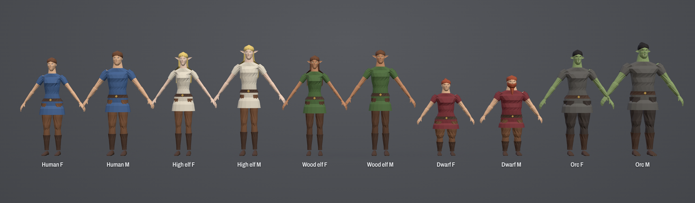

Build notes
Kinsmith is a working model of the system the brief describes: five races and two body types on one skeleton, swappable clothing and armour, palette textures, six animations and glTF export. Every number below comes from an automated run against this build.

Measured
| Check | Result | How it was measured |
|---|---|---|
| Unit tests | 11 of 11 pass | Vitest, tests/char.test.ts |
| One body topology | 1 vertex order across 60 bodies per detail level (5 races × 2 body types × 3 heights × 2 builds). LOD0 body 1,094 vertices, 2,084 triangles; LOD1 624 and 1,184 | Hash of the body index buffer |
| Dressed triangle counts | LOD0 2,477–3,596 (median 3,077); LOD1 1,419–2,156 | 10 bodies × 6 outfits per level |
| Skin weights | 0 invalid across 240,834 vertices in 120 builds (at most 4 bones, weights sum to 1) | Every vertex checked |
| Clothing follows the body | 69,600 fitted clothing points carry exactly the weights of the body point beneath them: 0 mismatches | Pairwise comparison |
| Hidden faces under clothing | Knight removes 2,184–2,224 triangles, villager 1,200–1,240, base mesh 64–104 | Faces fully covered by an outer layer |
| Animation clips | 6 clips, 26 tracks each, 0 tracks that fail to bind, every loop closes (largest seam 5e-17) | Track names checked against the 28 bones |
| Same clips on every race | 150 of 156 exported tracks are the same objects for a human and a dwarf; only Root height differs (up to 4.87 cm) | Object identity of exported tracks |
| Feet on the floor | Lowest point stays between -0.59 and +0.2 cm over 2,880 frames (30 bodies × 6 clips × 16 frames). Without grounding it reached -8.27 cm | CPU skinning of every frame |
| Hands entering the body | 0 mm in all 2,880 frames | Hand vertices against torso and thighs |
| Clothing staying outside | 5 of 6 clips never put a fitted clothing point inside its body point. Run: deepest knee bend folds 66 point-frames up to 3.31 mm into the knee crease | Signed distance along the body normal |
| glTF export | 6 files (4 races, both detail levels): 0 errors, 0 warnings, 0 infos in the Khronos glTF Validator. Each has 1 mesh, 28 joints, 1 material, 1 image, 6 animations, 304–393 KB | gltf-validator 2.0.0-dev.3.10 |
| Export reloads and plays | Every file reloads in three.js with 28 joints and 6 clips; Walk moves the left foot 20.7–32.4 cm | GLTFLoader round trip |
| Draw calls | 1 per character: 2, 11 and 36 including the floor disc, for 1, 10 and 35 characters | renderer.info in the browser |
| Build speed | Median 3.79 ms per character in Node; in the browser median 5.8 ms, slowest 22.3 ms over 60 race, body and outfit switches | performance.now() |
| Animation load | 35 animated characters: clips, grounding and bone matrices take 0.5 ms median on the CPU; whole-frame CPU 2.9 ms median | Software WebGL; GPU time not included |
| Recolouring | Repaints the 64×32 atlas; geometry object unchanged (same UUID) | Geometry UUID before and after |
| Accessibility and layout | axe-core: 0 violations in 5 scans; arrow keys move between tabs; 5 of 5 viewport sizes without horizontal overflow | axe-core 4.14, Playwright |
| Download size | 742 KB of JavaScript before compression | Vite production build |
Not measured
- Frames per second on real GPUs, phones or consoles (only software WebGL here)
- Import into Unity, Unreal or Godot: files pass the Khronos validator and reload in three.js, nothing more
- How closely it matches your reference sheets: this demo is generated in code; production meshes would be modelled to your references
- Facial rig, expression blend shapes, cloth or hair simulation
- Engine-side foot IK (grounding here is a root height offset)
- Long hair, capes and robe skirts against the legs during animation (checked by eye only)
- Normal maps, hand-painted detail or PBR textures beyond flat palette colours
- Lighthouse scores
How it holds together
One skeleton
28 bones with the same names and rest pose for every race and body type, including hand sockets for weapons. Only bone positions change.
One body topology
Torso, limbs, hands, feet and head are rings with fixed counts. Race, sex and sliders move the rings but never add or remove vertices, so UVs, weights and clothing carry over.
Clothing as shells
Fitted pieces copy the body rings they cover, pushed out by a layer offset (base layer, cloth, leather, plate) and keep the same weights, so they bend exactly with the body.
Hidden faces
Each piece records the span it covers. Body faces and lower layers fully under it are removed instead of fighting through.
One colour atlas
Every vertex samples one cell of a 64×32 texture. A recolour repaints the canvas: one mesh, one material, one draw call per character.
Shared clips
Six clips (Idle, Walk, Run, Wave, Attack, Cast) are bone rotations plus Root height. The viewer keeps feet on the floor each frame; export bakes that height into the body’s own Root track.
Run the checks yourself
npm ci npm test # unit tests npx tsx tools/measure.ts # geometry and animation report -> out/measure.json npm run build && npx vite preview --port 5180 node tools/qa.mjs http://localhost:5180 # export, validator, draw calls, axe, layouts
Sources
- glTF 2.0 specification (skins, animation channels, flat normals when none are given)
- Khronos glTF Validator
- three.js (renderer, AnimationMixer, GLTFExporter and GLTFLoader)